Z vami že več kot 25 let.
Smo ekipa računalniških strokovnjakov, ki na temeljih sodobne informacijske tehnologije razvija edinstvene poslovne modele.

Naša vizija je skrajšati čas poslovnih procesov.
Vodilo, spoznati poslovne procese stranke že na začetku sodelovanja, lahko zagotovimo samo z osebnim pristopom. Z ekipo izkušenih strokovnjakov poiščemo pravo rešitev za vsak problem.
Poslovni procesi so vse bolj zahtevni. Hiter odziv na spremembe je mogoč samo s popolnim obvladovanjem informacij. Prav hitro in kakovostno obvladovanje informacij je osnovno načelo naših programov in našega podjetja.
Zaupanje je osnova vsakega odnosa, tudi odnosa med kupcem in stranko. Kakovost, korekten odnos in posluh za težave so v 25 letih iz zaupanja naredili najboljšo blagovno znamko podjetja PRONET.
Da delamo dobro, nam povedo tudi nagrade.
Od leta 2016 smo prejemniki nagrad in certifikatov, kot sta Excellent SME in Boniteta odličnosti. Od 2019 izpolnjujemo kriterije za platinasto bonitetno odličnost, najvišjo bonitetno vrednost in posebno priznanje.


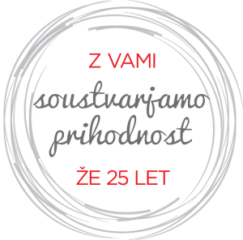
Spoznajte ekipo.
Poleg znanj smo razvijali tudi ekipo. Danes imamo v svojih vrstah številne strokovnjake, ki našim strankam pomagajo dosegati njihove cilje.
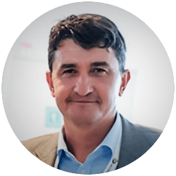
Slavko Frelih
Je direktor podjetja. Skrbi, da naša barka pluje v pravo smer in da so uporabniki zadovoljni.
slavko.frelih@pronet-kr.siAleš Gašperšič
Je direktor razvoja, ki je idejo AccountingBoxa spremenil v najnaprednejšo aplikacijo.
ales.gaspersic@pronet-kr.si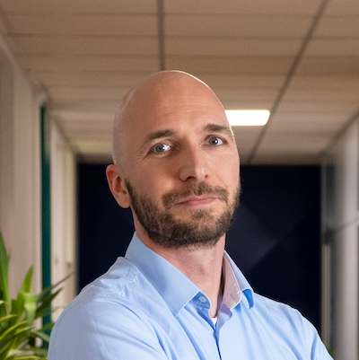
Anže Štembergar Zupan
Je direktor marketinga. Skrbi, da se dober glas o AccountingBoxu sliši daleč naokoli.
anze.s.zupan@pronet-kr.si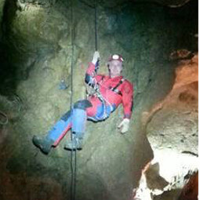
Janez Vengušt
Je direktor projektov in vodja digitalnih poslovnih rešitev.
janez.vengust@pronet-kr.si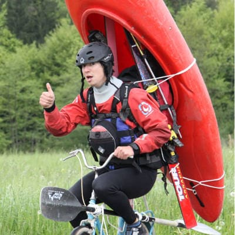
Primož Smolkovič
Je vodja tehnične podpore in svetovanja. Poskrbi, da je prehod na nove sisteme čim manj stresen.
podpora@pronet-kr.siAnže Nunar
Je vodja razvoja in programer, ki vsak izziv reši v najprimernejšem jeziku.
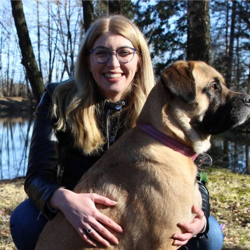
Sara Zupanc Frelih
Je skrbi za organizacijo študentov, računovodske zadeve in redna plačila faktur.
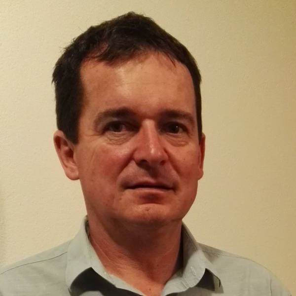
Gregor Šturm
Je sistemski analitik in vodja projektov.
podpora@pronet-kr.si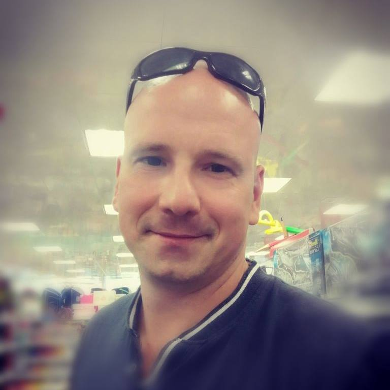
Andrej Lahovec
Je sistemski analitik in vzdrževalec informacijskih sistemov.
podpora@pronet-kr.siMile Karlaš
Je svetovalec za tehnično in vsebinsko pomoč uporabnikom.
podpora@pronet-kr.si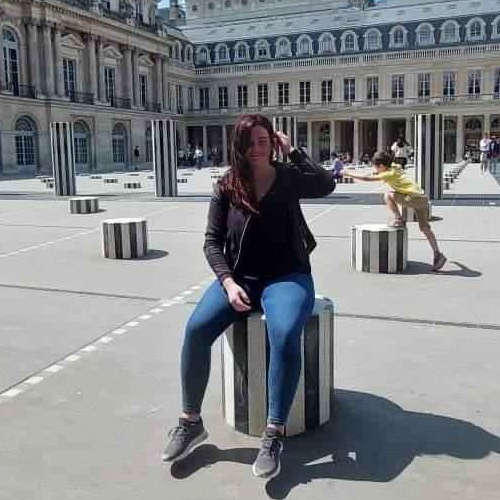
Anja Pogačnik
Je del podporne ekipe AccountingBox, od fakturiranja do dokumentnega sistema.
podpora@pronet-kr.siDanijel Logar
Je produktni vodja in vodja projektov, most med uporabniki, podporo in razvijalci.
podpora@pronet-kr.siŽan Frelih
Je del podporne ekipe AccountingBox in administracija uporabnikov.
podpora@pronet-kr.siMarko Koren
Je sistemska podpora strankam in delovno okolje, ki deluje.
podpora@pronet-kr.si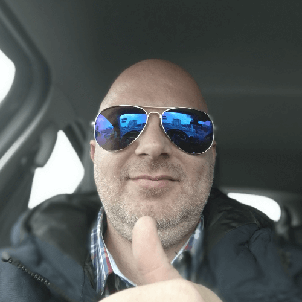
Damjan Žakelj
Je del svetovalne ekipe za pomoč uporabnikom.
podpora@pronet-kr.si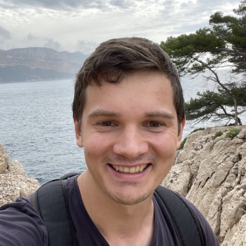
David Peklenik Urbanč
Je programer spletnih aplikacij v PHP, JavaScript in SQL.
Tomaž Eržen
Je sistemski analitik in programer.
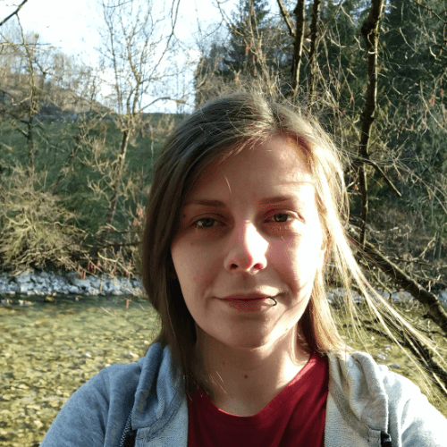
Rosanda Potrebuješ
Je programerka v PHP, JS, CSS in HTML.
Tomaž Tepina
Je razvijalec IT sistemov, predvsem za Oracle bazo.
Tomaž Šenk
Je programer za Oracle PL/SQL, Delphi in SQL.
Damir Bečić
Je programer v PHP, Java, JavaScript, HTML in CSS.
Radosav Marković
Je programer v C#, SQL, JavaScript in PHP, z žilico za oblikovanje.
Nejc Robič
Je programer spletnih aplikacij v PHP, JavaScript, Java in SQL.
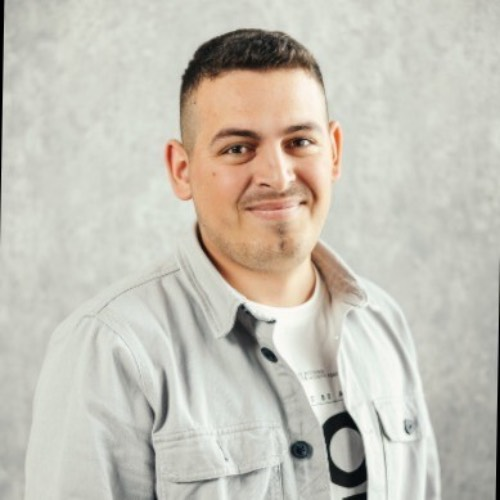
Ardian Reshani
Je programer spletnih aplikacij v PHP, JavaScript in SQL.
Osnovni podatki
Bi nas želeli spoznati v živo?
Dogovorimo se za pogovor in posvet ob skodelici kave ali čaja.